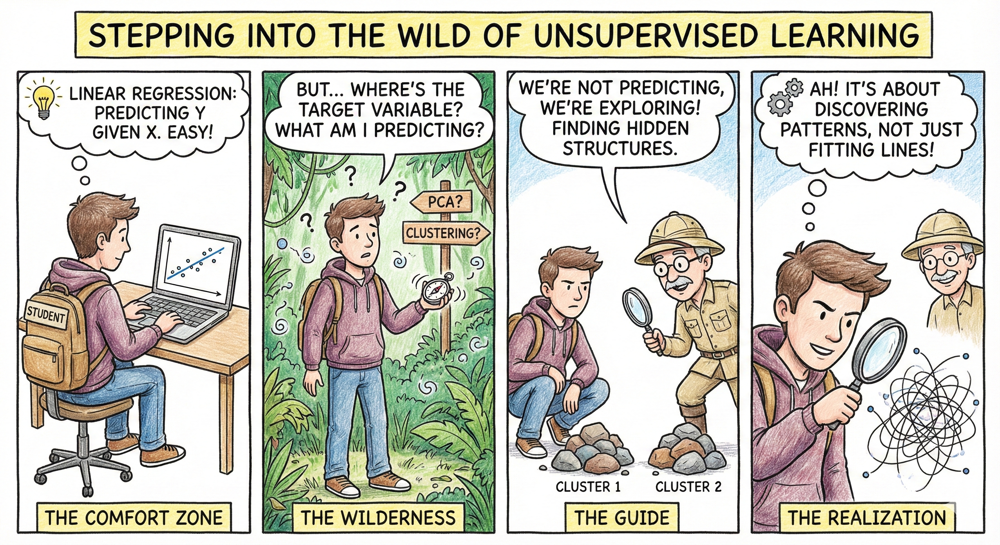
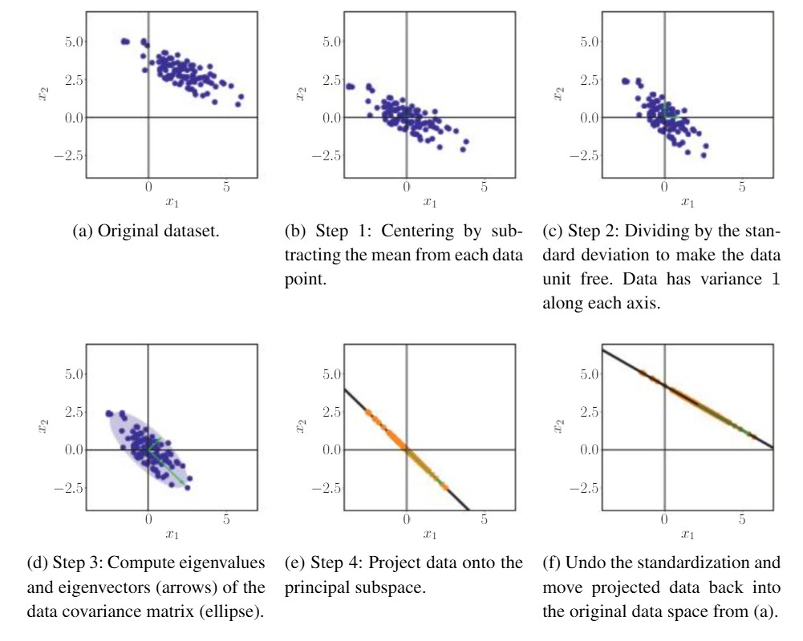
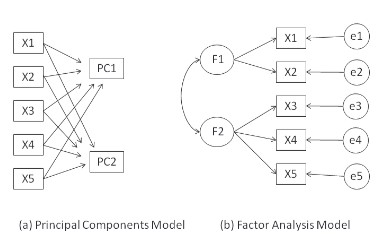
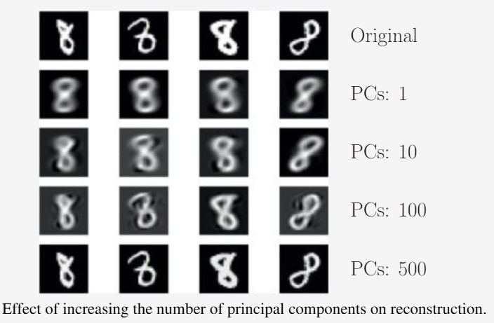
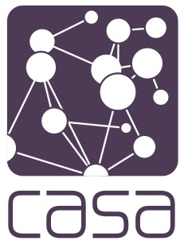

Dimensionality Reduction
Huanfa Chen - huanfa.chen@ucl.ac.uk
17th November 2025
CASA0007 Quantitative Methods
Last week
Lecture 8 - multilevel regression
Looked at:
- Understand Ordinary Least Squares (OLS) and Linear Mixed Effects (LME) models
- Understand the difference between Fixed Effects and Random Effects
- Can use Python or R to run OLS and LME
This week

Image credit: Google GeminiObjectives
- Understand the motivation of dimensionality reduction
- Understand the principle of Principal Component Analysis
- Can apply PCA to school datasets or other datasets
High-dimensional data
Dimensionality
- Definition: number of variables for each data point
- A tabular data of M rows, N numerical columns has a dimensionality of N (not M)
- Note - A column representing seasons in a year has a dimensionality of 4, or 3 (if using one-hot encoding and K-1 dummy variables), rather than 1
Dimensionality

Image credit: www.photofacts.nlCanon EOR R8 has a maximum resolution of 6000 * 4000 pixels for JPEG/HEIF, where every pixel corresponds to three colour channels (RGB). What is the dimensionality of an image from EOR R8?
- A. 6000 * 4000
- B. 6000 * 4000 * 3
- C. 1
- D. 6000 * 4000 * 3 * 2
High-dimensional data (Curse of dimensionality)
- Analysis is hard, e.g. multicollinearity & variable selection in linear models
- Interpretation is challenging
- Visualisation is impossible
- Storage is expensive
Exploitable properties
- Many dimensions are redundant and can be explained by a combination of other dimensions
- Many dimensions are correlated
- The data often lies in an underlying lower-dimensional space
Dimensionality reduction
- Reducing the dimensionality of data by generating a new set of (fewer) dimensions
- Often at cost of information loss
- Doesn’t change the number of data points
- It is unsupervised learning, and there is no ground truth to validate the result
- Can be viewed as data compression
Dimensionality reduction as compression
- Music: WAV → MP3 (typical size reduction ≈ 10:1, e.g. ∼50 MB → 5 MB for an album)
- Image: TIFF → JPEG (typical size reduction ≈ 5:1 to 10:1)
- Map projection: Earth (3D ellipsoid) → 2D map (dimension reduction 3→2, with distortion of area/shape/distance)
Principal component analysis
PCA
- A method for linear dimensionality reduction
- Each new dimension is a linear combination of original ones
- Proposed by Pearson (1901)* and Hotelling (1933)
- Still one of the most popular technical for data compression and visualisation
Pearson, Karl. “LIII. On lines and planes of closest fit to systems of points in space.” The London, Edinburgh, and Dublin philosophical magazine and journal of science 2.11 (1901): 559-572.
Illustration
- PCA from 2D to 1D
- Aim to find a ‘direction’ (i.e. a line) that keeps the most information (or variance) between data points in 2D
{kind=link}
Which direction is the best?
{kind=link}
| Direction | Variance (explained) | Proportion of total |
|---|---|---|
| Original data (total) | 43.8053 | 1 |
| Projection on \(x_1\) axis | 8.79708 | 0.200822 |
| Projection on \(x_2\) axis | 35.0083 | 0.799178 |
| Projection on \(y=2x+0.1\) | 43.8013 | 0.999908 |
| Projection on \(y=x\) | 39.4468 | 0.900502 |
PCA automatically searching for informative directions
- PCA automatically searches the most informative direction, called the first principal component (PC)
- After finding this one, PCA looks for a second PC:
- Not overlapping the information already captured by the first PC
- With as spread as possible between data points
- Not needed when #1 PC explains 100% variance
{kind=link}
Generalisation to M-dimensional dataset
- The example above is for illustration; please don’t apply PCA to a 2-D dataset in your work
- For data with M dimensions (not M columns), PCA method will find M (or fewer than M) PCs as a new space to represent the data points
- These PCs are ranked by variance explained, i.e. #1 PC with maximal variance, followed by #2, #3
- These PCs are uncorrelated with each other
- We will choose the first k PCs for analysis, usually \(k\)=2,3
Different ways to understand PCA
- Maximum variance perspective (we did it!)
- Projection perspective*
- Engenvector Computation and Low-Rank Approximations*
- See Chapter 10, Mathematics for Machine Learning*
PCA in practice
Illustrating steps of PCA

Image credit: Mathematics for Machine LearningQ: how to choose k?
- No golden rules; some guidelines
- For visualisation: k = 2 or 3
- Keep components with eigenvalues > 1. Eigenvalue of a PC is proportional to variance explained by this PC
- Scree plot (elbow method): use the point where the bend happens, where the curve changes from steep to flat
Exmaple: PCA on performance & disadvantage attributes of school data
'| | Attribute | Description |\n|---:|:-------------------|:-----------------------------------------------------------------------------------------------------------------------|\n| 0 | PTFSM6CLA1A | Percentage of pupils eligible for Free School Meals in the past six years (FSM6) and/or Children Looked After (CLA1A). |\n| 1 | PTNOTFSM6CLA1A | Percentage of pupils not eligible for FSM6 and not CLA1A. |\n| 2 | PNUMEAL | Percentage of pupils whose first language is known or believed to be other than English. |\n| 3 | PNUMFSMEVER | Percentage of pupils who have ever been eligible for Free School Meals in the past six years (FSM6 measure). |\n| 4 | ATT8SCR_FSM6CLA1A | Average Attainment 8 score for pupils eligible for FSM6 and/or CLA1A. |\n| 5 | ATT8SCR_NFSM6CLA1A | Average Attainment 8 score for pupils not eligible for FSM6 and not CLA1A. |\n| 6 | ATT8SCR_BOYS | Average Attainment 8 score for male pupils. |\n| 7 | ATT8SCR_GIRLS | Average Attainment 8 score for female pupils. |\n| 8 | P8MEA_FSM6CLA1A | Progress 8 measure for disadvantaged pupils (FSM6 and/or CLA1A). |\n| 9 | P8MEA_NFSM6CLA1A | Progress 8 measure for non-disadvantaged pupils. |'Scree plot
| n_pc | explained_var | cum_var |
|-------:|----------------:|----------:|
| 1 | 0.610268 | 0.610268 |
| 2 | 0.254502 | 0.864771 |
| 3 | 0.0528413 | 0.917612 |
| 4 | 0.037728 | 0.95534 |
| 5 | 0.027608 | 0.982948 |
| 6 | 0.00663277 | 0.989581 |
| 7 | 0.00483694 | 0.994418 |
| 8 | 0.00453447 | 0.998952 |
| 9 | 0.00104571 | 0.999998 |
| 10 | 2.17529e-06 | 1 |{kind=link}
How many data points are sufficient for PCA
- Rule #1: “5-10 times as many subjects as variables”
- e.g. with 10 variables, we need at least 50 or 100 data points
- Rule #2: with several hundred observations, PCA are probably reliable.
PCA is not factor analysis
- PCA aims to find PCs that are combination of original variables for maximising the variance explained.
- FA aims to find hidden factors that underlie or cause the observed variables.

Source: R in ActionExample of PCA on MNIST digit recognition
60,000 exmaples of handwritten digits 0~9. Each digit is an 28*28 image or 784 pixels (dimensions)

Source: Chapter 10, Mathematics for Machine LearningKey takeaways
- High-dimensional data often lies in lower-dimensional space, thus dimensionality reduction is possible.
- PCA is a linear dimensionality reduction method.
- PCA aims to maximise variance explained by PCs.
- The output PCs are ranked by the explained variance, and these PCs are not correlated.
- PCA results can be used for visualisation or as input to regression/clustering.
Practical
- The practical will focus on calculating and interpreting PCA.
- Have you questions prepared!

© CASA | ucl.ac.uk/bartlett/casa